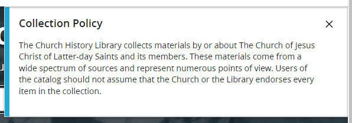

🔗 Sources & More Material¶
Estimated time to read: 14 minutes
Primary Sources¶
I'll have links here to sites that I'm pretty confident are owned and maintained by the LDS church itself.
LDS sites¶
- churchofjesuschrist.org: LDS church's official site.
- lds-general-conference.org: A corpus of general conference address texts. Does not appear to be owned by the church, but is sanctioned by it.
- churchofjesuschrist.org/media/publications: (ARCHIVED) Media publications. PDFs of scripture, proclamations, manuals, president teachings, etc. At some point, this page was removed, and its contents have been moved elsewhere. The provided link is to an archived copy, for posterity.
- churchofjesuschrist.org/study/manual/gospel-topics: They're not called Gospel Topics Essays anymore; those spicy articles are now nestled within a lot of superficial Q&A pages.
- catalog.churchofjesuschrist.org: Appears to be part of official church domain. Contains numerous older records, scans, documents.
When I first load up and select the search bar, this popup appears:

Collection Policy
The Church History Library collects materials by or about The Church of Jesus Christ of Latter-day Saints and its members. These materials come from a wide spectrum of sources and represent numerous points of view. Users of the catalog should not assume that the Church or the Library endorses every item in the collection.
lol. lmao.
Joseph Smith Papers Project¶
As its inception, Official LDS Newsroom proudly announces:
The Church of Jesus Christ of Latter-day Saints announced today the establishment of The Church Historian’s Press, a new imprint for publishing works related to the Church’s origin and growth.
https://www.josephsmithpapers.org/ is part of this domain. Both The Church Historian’s Press and Joseph Smith Papers appear to be legitimate, LDS leadership-owned sources of information.
JSPP has lots of cool documents, including an 1830 edition of the Book of Mormon, and spicy notes on polygamous sealing
Deseret Management Corporation¶
Deseret Management Corporation (DMC) is a for-profit company affiliated with The Church of Jesus Christ of Latter-day Saints.
One could argue that "affiliated with" doesn't mean "owned by." Although, in the interest of simplicity, Deseret News, outright stated that DMC is owned by the church, so... Take that how you choose to?
Go check out their page on "our companies."
Deseret Digital Media¶
Owns KSL and its subsidiaries
Owns Utah.com, tourism site
Deseret News¶
The Deseret News is a subsidiary of the Deseret Management Corporation, which is owned by The Church of Jesus Christ of Latter-day Saints.
— About Us, Deseret News
So what?¶
Disregarding all the times I'd been assured that Deseret News / Book was not owned by the church, the idea that a religion has a for-profit branch doesn't sit well with me. I thought religions were meant to operate by donation? I've certainly been told this explicitly about the LDS church. I was told that with such confidence that I perpetuated that explanation while on a mission for the church.
Being owned by the church itself carries some connotations- I'm not going to imply that every KSL article is screened & approved by the 12 apostles, nor that Utah.com's tourist excursions are somehow prophetic, but the connection is close enough for us common folk to read a level of complicity in what Deseret Book publishes. I don't presently know anything about their quality control process, but Deseret wouldn't publish things the Church would vehemently disagree with, would it? It's not an independent business, it's owned by the corporate office of the LDS Church.
Journal of Discourses¶
The official topic essays remind us that the Journal of Discourses is not an official publication, but it does have doctrinal teachings of early church leaders.
“It included some doctrinal instruction but also practical teaching, some of which is speculative in nature and some of which is only of historical interest.”
Some of it is legitimate, some of it is not; we won’t specify what is reliable, just want plausible deniability when something uncomfortable comes up. It's used as a "primary source" (with air quotes) for Brigham Young's Teachings of the Presidents of the Church manual, just with some extra steps for obfuscation.
The essay has lots of non-committal language, acknowledging that JoD exists, and you could go find it if you really wanted to. Found three or four sites online that have JoD published, but elected to reference Byu’s scriptural library. BYU is owned and funded by the LDS corporate office, so I feel pretty comfortable calling this a primary source.
Secondary Sources¶
Apologetic sites¶
Apologetics is a fancy word for "speaking in defense," normally around the context of religious claims. It isn't saying "sorry" for anything, but explaining a belief. These sites seem inclined toward promoting faith and shutting down harmful accusations.
-
fairlatterdaysaints.org: FAIR, Faithful Answers & Informed Responses, is an
unofficialapologetics site; attempts to address difficult questions and controversies. Provides primary sources for problematic documents. Appears to be one of two de facto standard for defending The Truth ™️ from those evildoers; subjectively, FAIR feels targeted toward career-aged adults, leaving the young whippersnappers with... -
scripturecentral.org: The other of what I'd call de facto apologetic sites. To me, subjectively, it feels more lively, colorful, interactive, and geared toward a demographic of teenagers or young adults. They've got videos and podcasts, including short-form videos for those with modern attention spans.
I've encountered the claim that both of these sites run independently of the LDS church. I've also encountered claims that writers for these sites are paid by the church, but I haven't dug very deep to verify either side of those claims. Maybe?
Critical sites¶
-
Utah Lighthouse Ministry, abbreviated to UTLM. Looks to be the official site of Jerald & Sandra Tanner, two notorious critics of the LDS church's truth claims.
-
LDS Discussions: Fantastic, well-researched dives into a variety of topics. Those pages are awfully long, so get comfy before reading.
-
CES Letter: An approachable list of concerns with LDS teachings, history, practices, etc. Sent to a Church Education System (CES) (1, 2) director seeking answers, thus the name. There's also plenty of material that claims to debunk the CES Letter.
-
Letter for my Wife: Feels very reminiscent of CES letter, but directed to a more familial audience. To me, it feels more approachable with the attitude of "I don't want these findings to harm our relationship." The site has a PDF, which I find easier to navigate than the site's pages.
Honorable Mentions¶
- A Careful Examination: Looks like another Github Pages compendium of LDS-adjacent notes
- Thoughts on things and stuff: Sounds vague, feels like a muse for doctrinal thoughts
- Mormonism under the microscope: I haven't explored them much, looks like a topical document for various claims / controversies
- floodlit.org: Info on sexual abusers & coverups within LDS church
- Zelph on the Shelf: I recall this being among the first blogs I encountered offers critical insights of LDS doctrine. (As of 2024 March, appears to be offline)— I am left hoping that it comes back in the future.
- Zelph's The Millennials' Brief Guide to the CES Letter is one I encountered early on (late 2018) when I was trying to find some "both sides" analyses of the CES Letter.
- Zelph is still around, running a YouTube channel, though!
Podcasts & Shows¶
Mormon.ish Podcast¶
I've picked up several one-off episodes from this show. Good stuff. I first encountered them in early 2024, and I appreciated their assessments feeling not-so-harsh. Like many things in the LDS faith, there's good to be found, but there's also some shady business going on behind the curtains.
I've begun listening to their playlist on the Gospel Topics Essays, but haven't gotten through all of them yet. Each installment is close to two hours long, and yet they're not exhaustive. I'd call them approachable, and satisfying one's want for commiserating after you've already settled on a conclusion. YMMV. 4/5 stars? Good stuff, give them a listen, and find some other areas of interest in their catalog.
Mormon Stories Podcast¶
On Youtube
I think in mid-2018, when my shelf was creaking under the weight of unanswered questions, I saw a highway billboard in Salt Lake advertising the show. Not knowing much at the time, I found their webpage, and I think I got intimidated by the click-bait style episode titles initially.
My experience with this show has been quite positive- at the time of writing this, they've got just under 1900 episodes. Many of them that I've listened to are exactly what the show's name implies— they're interviews with folks' experience in Mormonsim, both in and out, both for and against. My wife has told me that she finds Mormon Stories to be therapeutic, validating, and cathartic, as she empathizes with the show guests and their stories. I've inclined more toward their doctrinal episodes, particularly the subseries with LDS Discussions. Good stuff. Absolutely worth the time to dive in and listen to. There's something for everyone in their vast catalog of episodes, just search for some keywords.
This show also exposed me to others like John Larsen's Mormon Expression, and Radio Free Mormon.
John Larsen / Mormon Expression¶
Looks like this show formally ended in 2014. Larsen has been a semi-frequent guest on Mormon Stories. What I like most about Larsen is that he 'retires' more than once. His Mormon Expression show came to a close, and in Larsen's later episodes of hosting it, he comments something along the lines of "there's a great, big, beautiful world out there. Get out of here and enjoy it." I imagine myself having that same sentiment at some future point in my deconstruction. Mormonism is this never-ending, deep well of nonsense and shenanigans to marvel over. At some point, Larsen appears to have drawn the line, having said what he feels needs to have been said, and now focuses on gardening and homesteading. Good on you, buddy.
That is, until he comes back, as if to say "and one more thing...!" by appearing on John Dehlin's Mormon Stories show. Still with some hot takes and compelling insights. I like how Larsen will get really fired up over a given topic, but still has the emotional capacity to empathize with actively practicing LDS folks. Hearing this particular tirade really shaped my respect for him, where he becomes emotional while telling the audience to have compassion and patience with LDS folks. He has the sentiment of "they're trying their best, and legitimately believe something even if you don't." Shoutout to Larsen, he's a real keeper. He infrequently appears once in a while, and it's always a treat to listen to.
RFM / Mormon Discussion Inc.¶
Radio Free Mormon (RFM) is also a regular guest in John Dehlin's show. He's got lots of career experience in law, and offers critical insights into the church's history and current practices. I can only handle so much RFM at a given time, given the cadence and rhythm of his speech— to me, it's reminiscent of Captain Kirk's dramatic pauses amid sentences, making each statement sound like a sentence fragment. If you can look past that, or set your podcast player to x1.4 speed, he's still a great listen.
Bill Reel, also part of Mormonism Live (a show within Mormon Discussion?) is a former apologist. He'll host some shows with RFM on a given topic, take some callers, and shares insights from his time serving in church leadership.
Honorable Mentions¶
- Alyssa Grenfell: Feels more like an introduction to Mormonism, highlighting weird cultural phenomenon and practices. I'll also plug for Alyssa's book, How to Leave the Mormon Church, since I bought a copy and liked it 👍
- Carah Burrell, aka NuanceHoe: Spicy takes on Mormonism. Often a co-host with John Dehlin. Also runs her own show.
- Data over Dogma: Two Dan's, two mics, one show. One Dan is a biblical scholar, and the other is a goofball. They examine biblical records from which modern translations are derived. Very insightful. For what it's worth, Dan McClellan is an active Mormon last I checked.
- Drunk Mormon Podcast: An ex-Mormon shares the religion with a never-Mormon, which underscores just how absurd some of this sounds from the outside.
- Great and Spacious Podcast (GASP): The few episodes I've listened to felt like the four post-Mormon hosts were seeking their own catharsis by re-reading some scriptures while enjoying some alcohol. No shade— that's kind of what I'm doing here on this site, sans the expensive drinks. Search through their episodes for something that tickles your fancy, they've got lots of content.
- How-to Heretic: The first podcast I delved into amid deconstruction. Extraordinarily helpful in softening the blows of existential dread. Former Mormon folks evaluating Christianity at large, sharing some goofiness and laughs along the way.
- MEGA: Clearly presented as a comedy satire of large churches. However. I queued up one of their episodes satirizing Mormonism, and forgot about it for weeks. Once my playlist reached it, I had forgotten the pretext that it was satire. It is, and it is very well performed.
- Nemo the Mormon: Critical evaluation of the church, from "across the pond." Nemo is somewhere around Oxford England, has a delightful accent, and thoughtful insights. At the time of writing this, he's anticipating a "membership counsel" where the likely outcome is excommunication for speaking up against authority.
- Not So Molly Mormon: Former Mormon women deconstructing beliefs
- Rameumptom Ruminations: At the time of writing, their last episode was October 2023. Approaches topics critically, but fairly. Feels more philosophical and introspective, without much harshness.
- Secular Buddhism: My first intentional dive into another philosophy. Non-judgmental, approachable, and practical. This show is what helped me recreate the feelings of what Mormons call "the Spirit" while doing something mundane and non-spiritual. Unintentionally, this show contributed to my religious deconstruction, and I highly recommend it.
- Sunstone Mormon History Podcast: Lindsay Hansen Park and Bryan Buchanan do an excellent job of stepping through Mormonism's early days and history, sharing things in a more objective way; they're not tearing anyone's faith down, nor are they biasing it toward divine inspiration. Feels like "here are the journal entries and contemporary sources about what happened."
- TheraminTrees: More somber and introspective. This is among the first channels I indulged in when deconstructing religion. He mentions Mormonism only a time or two in passing, and focuses more broadly on Christianity. These videos are long, but cathartic in their composed, collected calmness.
- Was I in a Cult?: No one knowingly and willingly joins a cult. They get swept up in elevation emotion, rationalize how an organization demands more and more of them, until they reach a breaking point, and have a realization that this group is culty. This show interviews folks who have left culty MLM's, fitness clubs, acting classes, hippie refuges, and even religions.
Community¶
/r/exmormon subreddit: Pretty active hub for former Mormon folks to banter, vent, and interact. If you can believe that on reddit, of all places, folks can get fired up and have strong opinions.
They also have a Discord server.